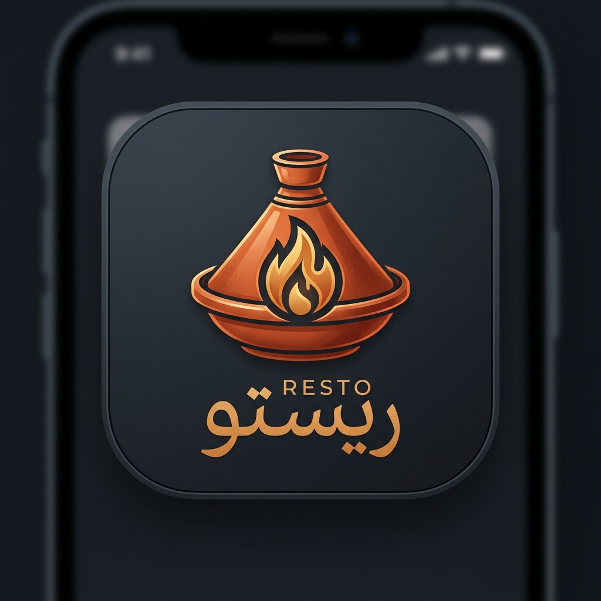

مسار مقترح لاختبار منظومة ريستو (Resto) خطوة بخطوة
الدخول بحساب mohamed@resto.eg ومشاهدة الترحيب المخصص والبانر الترويجي.
استعراض أقسام المشويات والطواجن مع السعرات ووقت التجهيز والصور الفاخرة.
الضغط على (+ إضافة) وتعديل الكمية مع ملاحظة تحديث عداد السلة فورياً.
إدخال كود الخصم في السلة ومشاهدة تطبيق الخصم الفوري 20% على الفاتورة.
إدخال تفاصيل العنوان، كتابة ملاحظة للشيف، واختيار الدفع كاش عند الاستلام.
ملاحظة تفعيل المرحلة الأولى (تم استلام الطلب وتأكيده) على الخط الزمني.
الدخول بـ admin@resto.eg واستخدام رمز TOTP للتحقق الآمن المكون من 6 أرقام.
مشاهدة ظهور الطلب الجديد فورياً في جدول إدارة الطلبات مع بيانات الأصناف وهاتف العميل.
تحديد كابتن متاح (مثل: كابتن هاني سعيد) وإرسال أمر التوصيل بضغطة زر واحدة.
تسجيل الدخول بـ driver@resto.eg ومشاهدة الطلب الجديد المسند للكابتن فوراً.
الضغط على زر الانطلاق، مما يحدث حالة الطلب لدى العميل إلى المرحلة الثالثة.
مطابقة مبلغ الفاتورة والضغط على زر "تم تسليم الطلب للعميل".
مشاهدة إشعار اكتمال الطلب وتحول الخط الزمني إلى "تم التسليم بنجاح".
إعطاء التقييم بالنجوم أو إرسال مقترح عبر مركز الشكاوى والمقترحات.
فتح سجل الطلبات السابقة واستخدام زر (إعادة الطلب) لتعبئة السلة فورياً.
افتح تطبيق العميل على هاتفك ولوحة تحكم العمليات على حاسوبك وشاهد التحديث اللحظي للطلب في نفس الثانية.
قم بتعطيل صنف من لوحة الإدارة وشاهد اختفاءه فورياً من تطبيق العميل لمنع أي طلبات غير متوفرة بمطبخك.